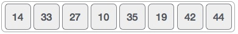
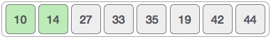

Arrays
-
Arrays Arrays Arrays Arrays Arrays Arrays Arrays Arrays
-
Algorithm "selection sort"
-
Selection sort is a simple sorting algorithm. This sorting algorithm is an in-place comparison-based algorithm in which the list is divided into two parts, the sorted part at the left end and the unsorted part at the right end. Initially, the sorted part is empty and the unsorted part is the entire list.
The smallest element is selected from the unsorted array and swapped with the leftmost element, and that element becomes a part of the sorted array. This process continues moving unsorted array boundary by one element to the right.
This algorithm is not suitable for large data sets as its average and worst case complexities are of Ο(n2), where n is the number of items.
-
How Selection Sort Works?
Consider the following depicted array as an example.

For the first position in the sorted list, the whole list is scanned sequentially. The first position where 14 is stored presently, we search the whole list and find that 10 is the lowest value.

So we replace 14 with 10. After one iteration 10, which happens to be the minimum value in the list, appears in the first position of the sorted list.

For the second position, where 33 is residing, we start scanning the rest of the list in a linear manner.

We find that 14 is the second lowest value in the list and it should appear at the second place. We swap these values.

After two iterations, two least values are positioned at the beginning in a sorted manner.

The same process is applied to the rest of the items in the array. Following is a pictorial depiction of the entire sorting process −

Tutorials Point: Data Structure and Algorithms Selection Sort (2020.01.08)
Retrieved from www.tutorialspoint.com
-
Algorithm "binary search"
-
Given a sorted array arr[] of n elements, write a function to search a given element x in arr[].
A simple approach is to do linear search.The time complexity of above algorithm is O(n). Another approach to perform the same task is using Binary Search.
Binary Search: Search a sorted array by repeatedly dividing the search interval in half. Begin with an interval covering the whole array. If the value of the search key is less than the item in the middle of the interval, narrow the interval to the lower half. Otherwise narrow it to the upper half. Repeatedly check until the value is found or the interval is empty.
Example:

GeeksforGeeks (2020.01.30)
Retrieved from www.geeksforgeeks.org
-
Quick Sort Algorithm
-
Like Merge Sort, QuickSort is a Divide and Conquer algorithm. It picks an element as pivot and partitions the given array around the picked pivot. There are many different versions of quickSort that pick pivot in different ways.
Example:

-
- Always pick first element as pivot.
- Always pick last element as pivot (se example)
- Pick a specific element as pivot.
- Pick a random element as pivot.
-
GeeksforGeeks (2020.02.01)
Retrieved from www.geeksforgeeks.org
-
Exercises